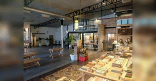
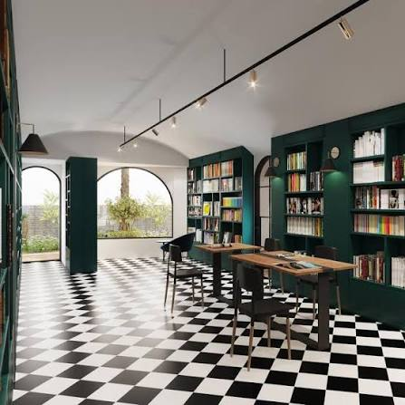
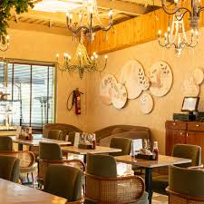
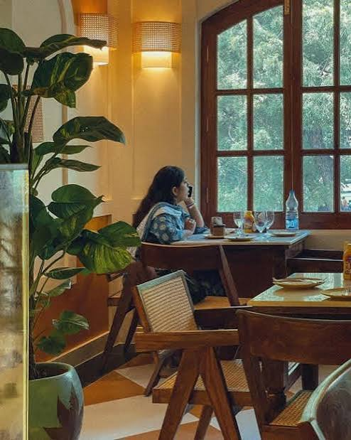
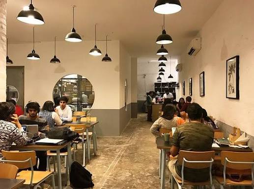
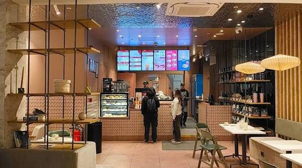

Work cafes in Chhatarpur & Dhan Mill
Further south but genuinely quieter — good options if you're in the Chhatarpur or Mehrauli belt and need a full afternoon of focused work.

A calm, European-style cafe inside the Dhan Mill Compound — natural light, reliable WiFi and charging points throughout. Popular with freelancers and professionals from across South Delhi. Good for longer work sessions. Less central than Shahpur Jat but noticeably quieter, especially on weekday mornings.
Best work cafes in Shahpur Jat
The most concentrated cluster of work-friendly cafes in South Delhi — all within walking distance, ~10 min by auto from Hauz Khas metro.

The top-rated work cafe and study cafe in South Delhi. Free WiFi, comfortable seating, no time pressure and a full food menu (Tortizzas, pasta, cloud eggs, specialty coffee). A reliable place to work from for 2–3 hours or a full afternoon. Also has an art & reading corner open to all.

A work cafe with a creative, collaborative feel — popular with freelancers, designers and people who prefer working around others. Good for brainstorming and informal meetings. Note: it's been getting noticeably busier lately, so seating isn't always guaranteed on weekday afternoons.

Two-floor cafe — head upstairs for a genuinely quiet space suited to solo sessions or reading. Coffee is the focus (cappuccino and Vietnamese cold coffee are good), limited food. Best for shorter focused work sessions rather than all-day stays. Very affordable at ₹650 for two.
Work cafes near Hauz Khas
Beyond Shahpur Jat, these cafes in Hauz Khas Village and Mehrauli are known for their calm atmosphere and work-friendly setup.

A community-driven cafe that attracts writers, travellers and independent workers. Relaxed, non-commercial atmosphere — you pay what you feel. Known for a culture of longer stays, conversations and creative work. One of the original work-friendly cafes in South Delhi.

Minimal design, natural lighting and a calm interior make Cafe Tesu a good option for focused work in Mehrauli. Less crowded than Hauz Khas Village spots, suits people who prefer a quieter neighbourhood cafe rather than a busy hub.
Work cafe in Khan Market
If you're in central South Delhi, Khan Market has one notable option for a work session.

A boutique bean-to-bar chocolate cafe with specialty coffee. The modern interior and quieter daytime atmosphere make it workable for short laptop sessions. Better for a meeting over coffee than a full-day work session — Khan Market gets busy on evenings and weekends.
Work cafes in Greater Kailash & Saket
If you're based in GK or Saket, these are the most reliable options for a laptop session without heading towards Hauz Khas.

The most consistent work-from-cafe chain in South Delhi. Reliable WiFi, good specialty coffee, comfortable seating and outlets across Greater Kailash, Saket and Khan Market. Works well for short-to-medium focused sessions. Can get busy on weekends and post-lunch hours — go in the morning for a guaranteed quiet seat.

A well-regarded specialty coffee chain with outlets in Saket and GK. Ergonomic seating, charging sockets and good WiFi make it a practical choice for work sessions in that belt. Spacious layouts with separate zones — better suited to focused solo work than meetings. Closes earlier than some alternatives.